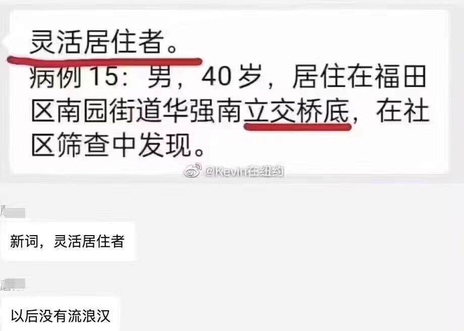
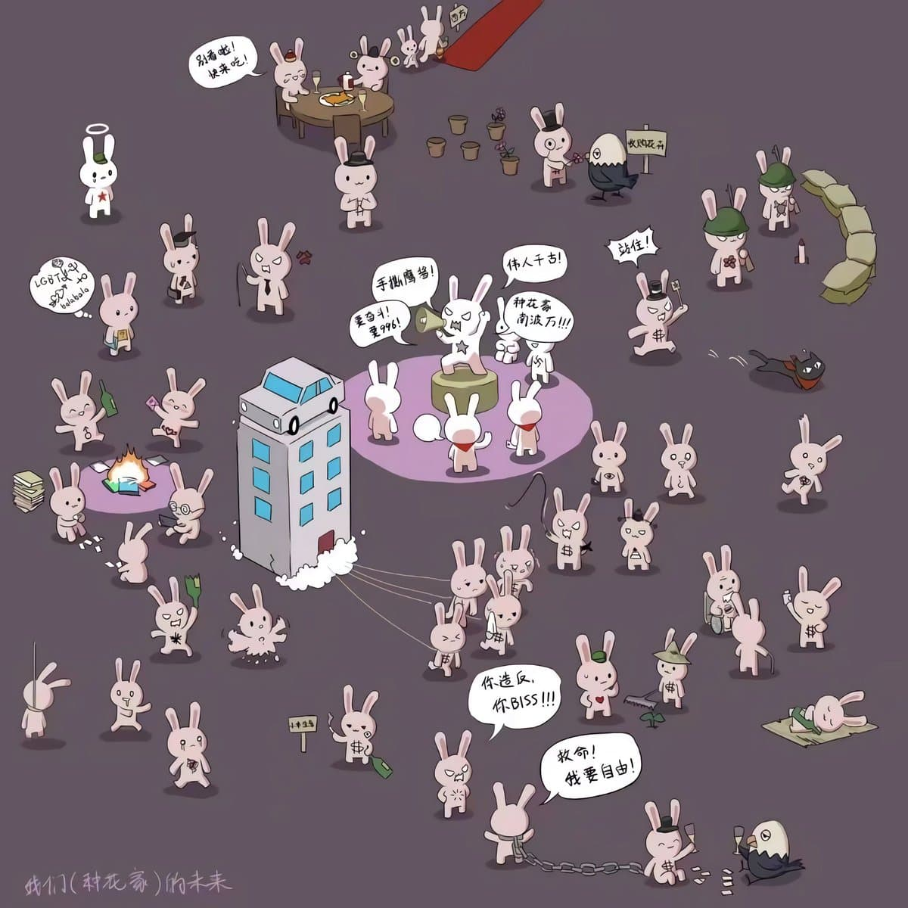
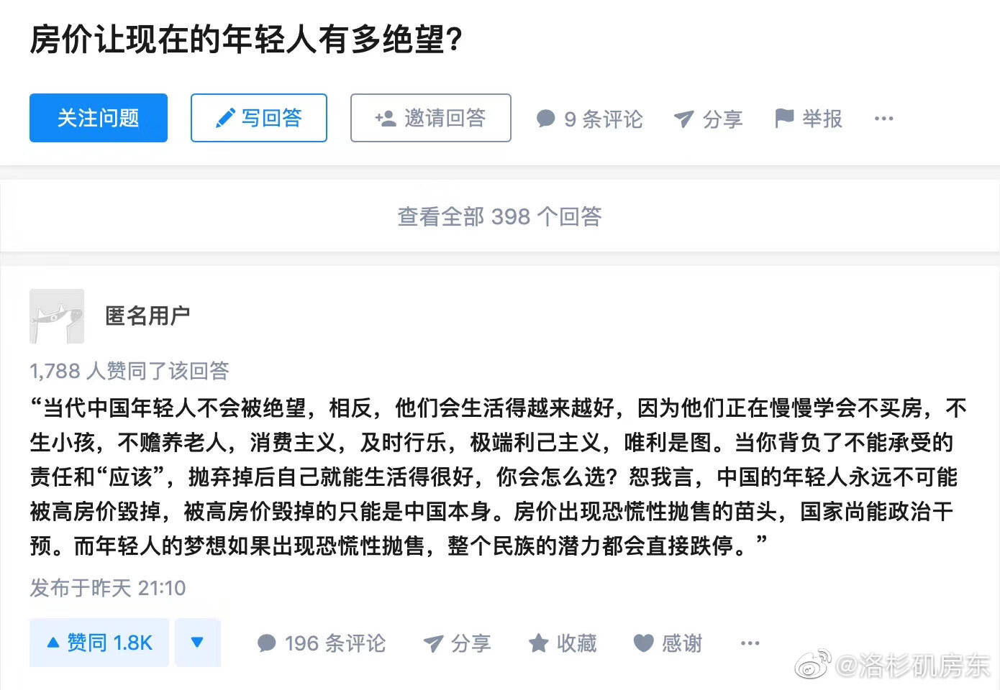
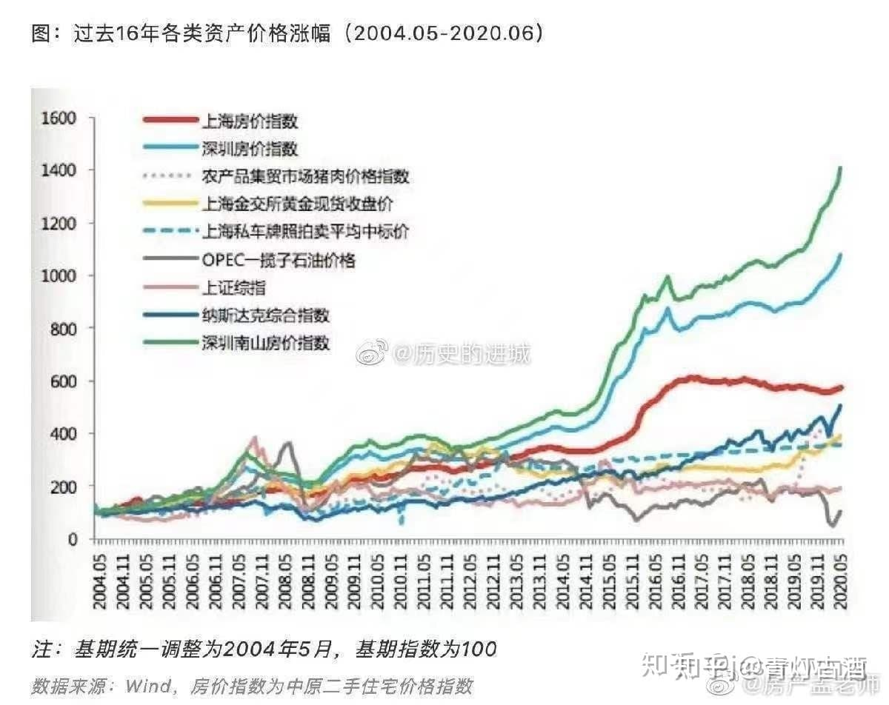
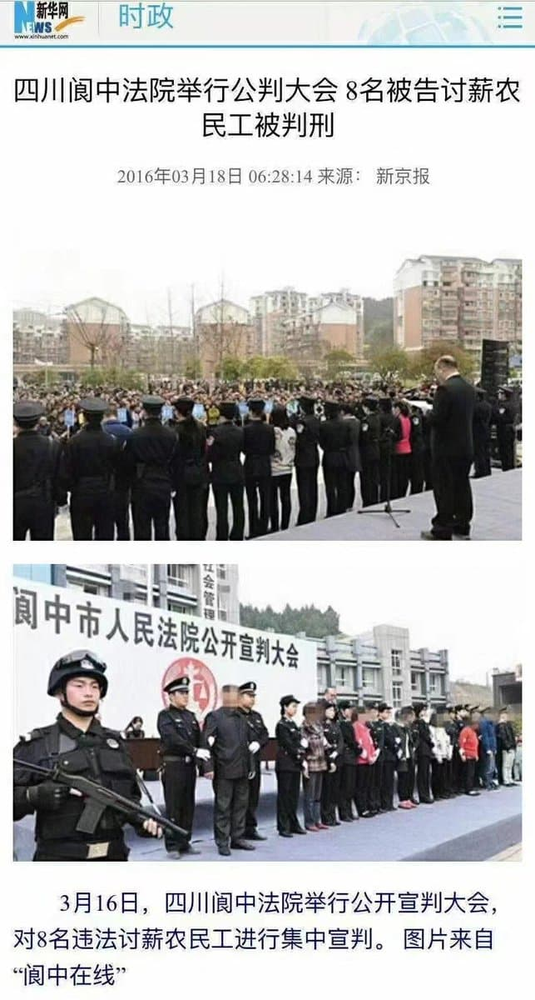
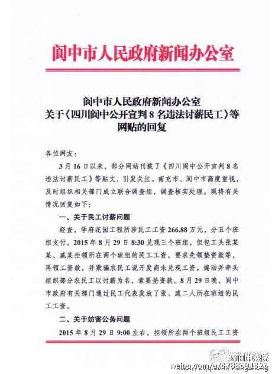
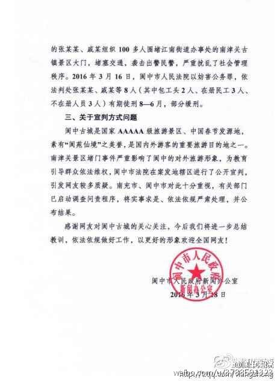

深圳劳动节宣传片《奋斗者，不寂寞》，不管多晚都有地铁和外卖
https://www.youtube.com/watch?v=35rcLwLzPkc
低情商：《韭菜，同病相怜》。
高情商：《奋斗者，不寂寞》。
中国这十年丨新时代网络强国建设取得历史性成就
网络强国｜网络安全意识有多重要？总书记这样强调
https://web.archive.org/web/20220904153034/https://baijiahao.baidu.com/s?id=1743024733346805848
网络强国｜打赢网络意识形态斗争 习近平这样部署
https://web.archive.org/web/20220828124334/http://politics.people.com.cn/n1/2022/0828/c1001-32513314.html
爬塔吊讨薪拘留多久啊
跳过文章，直接获取专业解读？
来源：律图与李志广律师联合整理 · 2022.08.06 · 175626人看过
导读：农民工爬塔讨薪是一种违法的行为，一般会拘留15天之内。在工地上爬塔吊的这种行为已经涉嫌扰乱社会治安，肯定是违法的，但不算犯罪，可能被公安机关按照《中华人民共和国治安管理处罚法》进行处罚，其实老板不发工资可以向当地劳动监察部门申请仲裁。
一、爬塔吊讨薪拘留多久啊?
农民工爬塔讨薪是一种违法的行为，一般会拘留15天之内。在工地上爬塔吊的这种行为已经涉嫌扰乱社会治安，肯定是违法的，但不算犯罪，可能被公安机关按照《中华人民共和国治安管理处罚法》进行处罚，其实老板不发工资可以向当地劳动监察部门申请仲裁。
只要工资讨得就值得。不这样工资就难得到，民工讨薪之路总是走得十分悲催。
刑法修正案(八)规定：
以转移财产、逃匿等方法逃避支付劳动者的劳动报酬或者有能力支付而不支付劳动者的劳动报酬，数额较大，经政府有关部门责令支付仍不支付的，构成恶意欠薪罪，依法判处三年以下有期徒刑或者拘役，并处或者单处罚金;造成严重后果的，处三年以上七年以下有期徒刑，并处罚金。
单位犯前款罪的，对单位判处罚金，并对其直接负责的主管人员和其他直接责任人员，依照前款的规定处罚。有前两款行为，尚未造成严重后果，在提起公诉前支付劳动者的劳动报酬，并依法承担相应赔偿责任的，可以减轻或者免除处罚。
欠工资正当的解决方案如下：
1、向当地劳动监察部门投诉，或拨打热线12333。
2、去人力资源与社会保障局申请劳动仲裁。
3、去当地人民法院打官司，申请支付令。
依据《劳动合同法》
第三十条，用人单位应当按照劳动合同约定和国家规定，向劳动者及时足额支付劳动报酬。 用人单位拖欠或者未足额支付劳动报酬的，劳动者可以依法向当地人民法院申请支付令，人民法院应当依法发出支付令。
第七十七条，劳动者合法权益受到侵害的，有权要求有关部门依法处理，或者依法申请仲裁、提起诉讼。
第八十五条，用人单位有下列情形之一的，由劳动行政部门责令限期支付劳动报酬、加班费或者经济补偿;劳动报酬低于当地最低工资标准的，应当支付其差额部分;逾期不支付的，责令用人单位按应付金额百分之五十以上百分之一百以下的标准向劳动者加付赔偿金。
二、农民工讨薪的规定
农民工讨薪找劳动监察部门，劳动监察大队是隶属于人力资源和社会保障局的事业单位，承担人力资源和社会保障局授权委托的指导开展劳动保障监察工作的行政职能和负责劳动保障监察经办工作。
1、先协商
先争取协商解决。协商时要注意以下几点：
要联合起来，可以选出代表协商;
要主动亮出证据，并注意通过录音等方式保存协商记录;
讲明政府和法律对拖欠农民工工资的处罚。
2、找工会申请调解
如所在单位有劳动争议调解委员会，可申请调解。劳动争议调解委员会由职工代表、用人单位代表和工会代表组成。
请注意，劳动争议调解委员会主任必须由工会代表担任!维护农民工合法权益是工会职责所在。遭遇拖欠工资的农民工，可前往工会帮扶中心、工会法律援助中心寻求帮助。工会可以直接出面同用人单位协商解决，或者协调劳动保障监察部门解决;需要打官司时，工会还会提供专业法律援助。
3、找政府
向当地劳动保障监察部门投诉，可登录当地社保部门官网，或直接前往当地劳动监察机构投诉。
投诉时要注意：
拖欠工资行为须是2年内发生;
查清隶属关系，到单位所在地的监察机构投诉;
投诉书面材料要说明姓名、性别、身份证明、年龄、职业、工作单位、住所和联系方式，用人单位的名称、住所、法定代表人或者主要负责人的姓名、职务;
说明被拖欠工资的事实和要求足额支付工资等投诉请求事项。
如果不会写投诉书面材料，也可以口头投诉，由接待人员记录，经投诉人确认无误后按手印。
4、申请仲裁
可向当地劳动争议仲裁委员会申请仲裁。需要注意的是，要在劳动争议发生之日起60日内向劳动争议仲裁委员会提出书面申请。对仲裁结果不服的，可以向当地人民法院提起诉讼。
现在，各地劳动争议仲裁机构开辟了争议处理“绿色通道”，对欠薪争议案件优先受理、开庭;及时裁决、结案。
5、打官司
分三种情况：
针对劳动纠纷案件，经劳动仲裁后任何一方不服的，可以向法院提起诉讼;
经仲裁后都服从，劳动仲裁裁决生效后，用人单位不执行的，农民工可申请法院强制执行;
属于劳务欠款类的可直接向法院提起民事诉讼。
6、申请免费法律援助
打不起官司的讨薪农民工，可以向欠薪的老板和单位所在地法律援助机构申请法律援助，请法律援助机构指派律师免费帮你打官司。
申请时要提交：
①身份证明材料;
②经济困难的证明;
③与所申请法律援助事项有关的案件材料。
现在有许多黑心得工地为了工厂的利益不择手段，经常会拖欠农民工的工资，一般农民工都不采取一些不合常理的手段讨薪，比如爬塔，自杀等等，这些行为都是不合法的行为，可能还会受到法律的处罚，农民工讨薪应该采取正当合理的手段。
投诉/举报 声明：以上内容由律图网结合政策法规整理发布，若内容有误或涉及侵权可进行投诉
延伸阅读：
1、可以向施工单位主张权利，依法施工单位…
1)极重度智能损伤;2)四肢瘫肌力≤3级…
包工头爬50米塔吊讨薪被拘10天
来源：北京晚报2021-02-07 17:34:15
大字
【包工头爬50米塔吊讨薪被拘】2月5日，甘肃甘南。某建筑工地内，有人爬上塔吊准备跳下。合作公安发布通报：当事人系该建筑工地一名包工头，爬上50米高的塔吊臂威胁工地负责人并向党委政府施压恶意索要工程款。
经过长达4个小时的教育劝解，该男子从塔吊上爬了下来。该男子的行为触犯了《治安管理处罚法》相关规定，被合作市公安局依法以扰乱社会治安秩序处以行政拘留10天的处罚。
文章最后，合作公安发出提示：“农民工讨薪可通过合法途径逐级反映解决问题，相关职能部门将认真履职，全面维护农民工合法权益。对用跳楼、跳塔吊或暴力极端行为恶意索要工资的违法行为，公安机关将以“零容忍”的态度依法严厉打击处理。对以农民工工资拖欠为名聚集讨要工程款、材料款等恶意讨薪行为持续保持高压严打态势，切实为平安合作建设营造良好营商环境。”
灵活就业人员即自由职业者，如律师、自由撰稿人、歌手、模特、技术小工等，其工作方式自由灵活，故称为自由职业者或灵活就业人员。
中国官方近日宣布，截至去年底，全国“灵活就业”人员已达两亿人。此举被官媒渲染为“年轻人主动选择，无需过度忧虑”。但有学者指出，这是当局美化庞大失业人口，“丧事喜办”的卸责话术。
动态xx，灵活xx，恶意xx

非必要 原则上 不得无故
从“动态清零”到“入室消杀”，你能看懂疫情词汇吗？
“弹窗”、“管控区”、“静默期”、“动态清零”……疫情期间中文“新词”层出不穷
重磅! 人社通知: 2022年起, 60类劳动违法行为不再处罚!
https://web.archive.org/web/20220925053136/https://www.163.com/dy/article/H950JKDR05455BAL.html






中国梦 领舞中国街头
发表时间：2013-07-26 来源：中国文明网
刚到7月，中国各个城市的大街小巷，凡有建筑施工的地方，有围墙和围档之处，都被整齐划一的“中国梦，我的梦”系列公益广告覆盖，格式都是一幅中国最传统的民间艺术，如泥人、剪纸、农民画或者别的，配合以扎实、响亮的价值观口号，或者是一段简洁有力的小诗――我是顺着好朋友一清先生的几首被印在上面的小诗关注中国城市街头这忽然而至的变故的。
比如，一张两个幼子对弈的泥塑童子，配发的一清诗句是：
对弈小神童，尚在长成中。
游戏无规矩，打闹是常情。
但凡说故事，必须中国赢。
落子成定局，欢呼起高音；
中国我爱你，年少正青春！
再如，一个顶着锅盖头的挺拔少年的泥塑，一清在配诗里写道：
山路上的少年一脸阳光，
山路上的书声诵着吉祥；
山路上的书包背着未来，
山路上的憧憬向着远方，
诗书继世儿孙福，
德耀门庭满族芳！
当下之中国，几十年了，一直是一个全世界最为巨大的建筑工地，而那些遍布城市各个角落的围墙和围档正是真正的“城市碎片”，这些此前几乎很少为人注意的边边角角，经此“中国梦，我的梦”系列――讲文明树新风公益广告的有意覆盖，正在渐渐成为一道相当亮丽的城市风景，正在捡起人们行走、驻足、等待、回头中的的一个个不经意的瞬间，随风潜入夜润物细无声地改变着我们的周遭，用愉悦和缓的内容悄悄碰撞着每一个阅读它们的读者的心灵。
很有意思的事还发生在北京朝阳公园附近的某网站的新址，一幢显然尚未完工形似鸟巢的建筑工地，其周围的围墙和围档处张贴着一清先生的好几首“中国梦”系列短诗，把个网站新址围个里三层外三层，风雨不透而水泄不通，此情此景，倒有现实与网络两重社会复杂又简单关系的隐喻，一清的那些温和小诗这次是实实在在地又把一个互联网平台结结实实围在中央，用句江湖的话说，这是三十年河东，三十年河西。
不过，这件事一样可以做出非常不江湖的解读。
是次，推动“中国梦，我的梦”系列广告占领中国大中小城市街头的中央文明办，显然是执行着一种强烈的国家意志，所依傍的当然也是一种覆压性的国家力量，但它表达出来的却是如一清这样纯粹民间的中国声音。
另一种战争，延伸于互联网、自媒体和微博客、微信之外的话语权战争，就这样开始争夺着最为传统的城市和乡村的街头。从中略见那个已经在互联网世界里被歪曲、解构和淹没得不得气喘、不得立椎的“体制”正试图用另一种力量，撑起它可以布置的另一片天空，街头，或者就是“体制”这个现实得不能再现实又虚拟得不能再虚拟的东西最后必须守得住的底线，现在其实正在成为它发起话语权反击战的沙包阵地。
而如一清等人的诗，这种张扬着自信、个性和“自带锄头出工”（也叫“自带干粮”）式的爱国主义民间表达，正是这次反击战倚靠的冲锋枪和手榴弹。
庞杂的世界，繁复的现实，多元的阶层，膨胀的诉求，正组成眼下所谓转型中的中国和转型中的2013年，它有一个由“中国梦”开启的今天，和一个必须由“中国梦”赢下来的未来。
30多年来，常常被官方话语标榜的“精神文明”，其实从来也没有离开过有明确价值观和民族性的政治涵意，尤其是当“中国”这两个字整个被搬到互联网，当互联网整个被种种可知的或不可知的资本力量所掌握之后，那种有明确价值观和民族性的政治涵意却越来越被淹没、被扭曲，甚至要被粉碎，但现在，我们又可以长出一口气说：在街头，中国仍有梦。
其实，这次被打包进“中国梦，我的梦”公益广告中的，主要内容都是中国传统的道德价值，团结和睦、节俭持家、环境健康、勤劳吉祥、仁爱和谐、孝道好人等等，内容诉求着走在大街小巷的每个普通中国人与“中国梦”自然而然的关联，还有个人、家庭与国家的利益一致，即使是如政治色彩强烈的“共产党好”，亦结合上柔软贴切的中国式设计，它们碎片化地散落在一处处或安静或喧嚣的街头，但深知网络时代中国内情的那些人们还是愿意对此做出哪怕是有些过度的解读：
中国梦，不该只是中国街头的点缀者，而更应是中国街头的领导者。 （司马平邦）
一清，原名谢柳青。文化学者，自由撰稿人，中国名博沙龙主席。1984年起先后任《新湘评论》记者、《美育》杂志主编、湖南文艺出版社副社长、湖南电子音像出版社社长。1977年高考作文《心中有话向党说》由零分到满分，中央电视台在纪念高考改革30年时曾拍30分钟专题片《风声雨声读书声》讲述此故事。2013年起，其所写“中国梦”诗词影响“覆盖了九百六十万平方公里土地”，分别发表在天安门广场、长安街、首都及全国各地国际机场、文化广场、建筑围挡和全国各大主流报刊、电视媒体。有“毛泽东研究”系列及文化、教育、纪实、汉字研究等十数种著作在海内外出版发行。有话剧、音乐剧数种巡演。是《诗画中国梦》作者。
1977年12月，高考结束后不久，一篇考生作文的各种手抄本在湖南各地流传，甚至还传往大江南北，以至于此后连续数届的高考考生都把此文当作范文学习、背诵。至今，仍有些人能一字不差地背出来。
“心啊，你慢点儿跳，慢点儿跳，让我静下来，把心底的话，向党倾吐，把我真实的思想感情向党汇报，心啊，你慢点儿跳……五年了啊五年了……一个十几岁的青年，难道真的不想上大学？难道看到党需要我们的时候，真的无动于衷，逃之夭夭？为了实现四个现代化，谁不想升入大学，继续深造？可是，我的父亲是个教师，在‘四害’横行的日子里，‘臭老九’的孩子怎能进高校？”
这篇作文的作者便是来自岳阳县的21岁考生一清（原名谢柳青）。不知是哪些阅卷老师将它偷偷抄了下来，带出了阅卷场，这才有了四处传阅的故事。
一清说，1977年的高考作文题为“心中有话向党说”，自己的作文曾经历从零分到满分的转折。
“诉说着心底的不平，期望着东方的拂晓”“热血在周身沸腾”“怒火在心中燃烧”……作文中的这些语句，起初被阅卷老师认为是在借高考发泄对社会的强烈不满，因此被判为“0”分。
在试卷复查中，阅卷老师形成了截然相反的两派意见，一派“不敢越雷池半步”的老师认为“文章发泄了不健康情绪”；另一派则认为这是真正的“心中有话向党说”，说得字字见真情。
＾
当时在学校的代课老师（后排右二为本文口述作者一清）当年都参加了考试
随着手抄本的流传，这篇作文带来的争议惊动了省教育部门，于是教育部门派专员到岳阳地区考场，组织了一场对作文的评审。
当时，一位叫王宗萍的老师在台上向全体阅卷老师声情并茂地朗诵了这篇作文。全文讲述的是一清1972年高中毕业后下乡劳动的5年里，因父亲是教师，“成分”不好，只能年复一年地看着别人被推荐上大学，心中的迷茫和思考。
相似的经历唤起了身为教师的阅卷者们的“集体觉醒”，会场响起一片哭声，作文也因此瞬间从零分变为满分。
多年后，一清回忆起这段往事，仍能感受到岳阳南湖边这瞬间的改变，它给那年冬天的高考增添了一抹温暖底色。
其实，在当年的高考语文考试中，一清做完试卷只花了不到三分之一的时间。“现在看来可能是小学一年级水平的题目，但当时很多人压根分不清这是外国字还是拼音，实在是没学过啊。”一清说，“好在我在大队的小学当代课老师，学过拼音。”
而高考作文对一清来说更是轻松。“这是我5年来内心一直在反复诉说的话，直到最后结束我都处在一种激情之中。”
完成考卷后，一清仔细地将作文誊写在底卷上，又数了一遍字，恰好是888个。之后，他将底卷带回家保存了起来。
这份底卷被叠成四四方方的小豆腐块。经过40年的岁月，纸张已经软薄发黄，起了毛边，但上面蓝黑色的钢笔字仍清晰可辨。
对一清来说，这早已不仅是一张考试底卷，它还带着那个特殊年代的种种印记。在下乡的5年里，夜晚他在工棚的马灯下给民工们念《阿拉伯民间故事》《红楼梦》；那年冬天，与大队里的30来个人挤在一台手扶拖拉机上，“轰啦啦”地去县城参加考试……
1978年3月23日，一清来到湖南师范学院（今湖南师范大学）岳阳分院办理了入学报到手续。坐在教室里听到班主任老师那一声亲切的问候时，才敢确信自己真的已经是一名大学生了。
2007年，恢复高考30周年时，一清也曾在多个场合谈起高考话题。那时，他的认识是“这是一次民族的复活节”。如今，他又有了新的感悟，“这是一场半睡半醒中的高考”。
“从1977年7月教育部确定恢复高考，10月人民日报发出招生公告，到12月举行考试，虽然领导层面已认识到人才培养一天也不能再耽搁，但当时整个社会还没有做好充分的准备，思想也未完全解放。从零分到满分的转变，以及政审、体检中出现的阻碍，都反映出人们对新事物的来临还处在半睡半醒状态中的一个侧影。”一清说。
然而，1978年举行的高考，一清感受到了完全不同的气氛。经过1977年冬天的高考，社会见证了学生们学习的积极性以及释放出的学习风气，处处呈现出欣欣向荣的景象。在一清看来，与今天高考的热闹有些类似了。
“1977年的高考是起点，影响了我的一生。”一清说，此后，无论是留校任教，到出版社任社长、从事证券工作，还是现在成为一名自由撰稿人，一清都心怀感恩，“我跟主流社会的节奏是合拍的，对社会的所有看法都是充满阳光的”。
（口述/一清 采写/程琴怡）
一清，文化学者，中宣部中国梦公益诗歌创作人。现为自由撰稿人，中国名博沙龙主席。一清原名谢柳青，1977年考入湖南师范学院岳阳分院（今湖南理工学院），是当年湖南高考作文满分考生。
依法慎重处理拒不支付劳动报酬犯罪案件，依法打击恶意讨薪等违法犯罪，保障企业正常生产经营。
有下列情形之一的，视其情节由公安机关依据《中华人民共和国治安管理处罚法》第二十三条之规定，处警告、罚款或拘留；情节严重构成犯罪的，由司法机关依照《中华人民共和国刑法》第二百九十三条之规定，处五年以下有期徒刑、拘役或者管制；纠集他人多次实施前款行为，严重破坏社会秩序的，处五年以上十年以下有期徒刑，并处罚金。
（1）违反社会治安管理规定，采取拉横幅、堵塞道路、阻碍交通、封锁出入口等方式，造成严重影响的；
（2）采取爬楼、爬吊塔、切断水电、冲击施工现场等方式，妨碍正常施工、影响办公秩序，造成严重损失的；
（3）采取敲诈、勒索、胁迫等方式索取建设领域工程款、材料款、劳务款或农民工工资，涉嫌欺诈或以合同纠纷为由蓄意闹事的；
（4）串通部分农民工，伪造证据，虚报、冒领工资，或者煽动农民工采取激进手段要挟、勒索，超额索赔以获取非法利益的；
（5）施工方借农民工工资的名义讨要工程款的；
（6）组织农民工或非施工现场人员围堵国家机关、冲击行政办公区域的；
（7）不服从政府部门管理，威胁相关政府工作人员人身安全等严重影响政府有关部门调处的。
市场经济并不是不能为人民服务，它并不天然就跟私有制绑定，社会主义和共产主义在全民所有制情况下有市场（也就意味着有经济）是非常正常的事情，比如艺术品交换（易）。连共产主义下会有市场都不能理解，恐怕你也不明白社会权力的归属与代表才是你说的那一切的根基，以及社会权力回归社会才是共产的实践，那么基本可以判定你只是单纯的阶级论，而不是真正的“生产关系/生产力”理解者了，那就更不用妄称什么理解共产主义，包括全民所有制了。在这样一种教条的幻想中指责“人民经济”是乌托邦，我是不太明白到底哪个更乌托邦。其实文章讲得很清楚，只不过可能你也不太理解，人民经济其实就一句话：为人民服务。而且目前最现实的情况就是，我们所处阶段，和你我这样的人的力量，只有一个选择，那就是支持人民经济，先能让这些机制为人民服务，才能谈到底是所谓“无产阶级”再次成为新特权阶级，还是真的发起一次真正意义上的革命(范式转换)，从而推进人类历史。你当然可以指责这样的“人民经济”是乌托邦，不过我更希望你把这份力气先用到去攻击那些最起码也算是资本主义乏走狗的理论上，最起码也得写出这么一篇水平的东西？当然，你大可以说发不出来，但这里应该是可以发的，办法总比困难多。不然像现在这样指责来指责去，搞得好像对方只要不是自己理论路线的就是死敌一般，这不就是美共和网左蠢事的重演么？且不论恩格斯的“前劳动”之类的论调，他的这个理解发展到现在，如果我们可以理解“以人的方式去发展”（前提是理解人这种对象性存在的一切了），那么真的不难理解交换和市场的存在未必要和这些教条的定义百分百匹配，只不过这其中需要革命的范式是“商品”和“经济”。至于列宁所说的消灭货币，其实更应该进一步理解资本主义以货币为社会权力的表达，那么消灭货币并不是要把货币这个代表物给消灭，这跟要消灭数字一样荒唐，而是要理解消灭“货币这种社会权力代表物”（即货币不再具有社会权力的表达），这样才可能真正革命“商品”和“经济”这两个范畴。